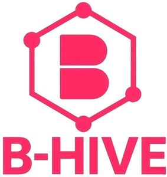

Trade Mark Journal No.2026/011 13 March 2026
WO0000001905072 (41,42)
Office of origin: European Union Intellectual Property Office (EUIPO)
Date of International Registration:9 December 2025
Date of designation in the UK:
9 December 2025

The mark contains the colour pink.
International priority date claimed: 10 June 2025
(European Union Intellectual Property Office (EUIPO))
(019200429)
- Class 41
- Entertainment; entertainment information; video entertainment services; television entertainment services; online entertainment services; cinema entertainment; radio entertainment; education; education information; providing of training; sporting and cultural activities; organization of competitions [education or entertainment]; organization of exhibitions for cultural, recreational, or educational purposes; entertainment services, namely, providing temporary use of non-downloadable online video; providing non-downloadable audio, video, audiovisual and multimedia content via a website; distribution and rental of audio, video, audiovisual and multimedia content, namely computerized on-line searching and ordering service featuring movies, motion pictures, documentaries, films, television programs, graphics, animation and multimedia presentations, and other audiovisual works in the form of digital downloads and direct digital transmission viewable over computer networks and global communication networks; provision of non-downloadable videos via a video-on-demand service; providing audio, video, audiovisual and multimedia content through the internet, telecommunications networks and wireless telecommunications networks via a searchable database; digital audio, video and multimedia publishing services; education services, namely, providing on-line tutorials, classes, courses and workshops in the fields of computer software, cloud computing, computer networks, mobile computing, computer software design and development, graphic design, web design and development, digital photography and video, type and digital publishing; entertainment services, namely, providing the ratings and reviews of television, movies, videos, music, screenplays, scripts, books and video game content via a website; production and postproduction of videos; production and postproduction of podcasts; production and postproduction of audiovisual programs; organization of shows [impresario services]; recording studio services; videotape editing; videotaping; publishing of visual works, audio works, and audiovisual works; subtitling; rental of radio and television sets; consultancy services in the field of entertainment.
- Class 42
- Design, development, maintenance of computer software; design, development, maintenance of computer platforms; design, development, maintenance of application software; cloud computing services; software as a service (SaaS); platform as a service (PaaS); providing temporary use of non-downloadable web and mobile application software; private cloud hosting provider service; public cloud hosting provider service; web site hosting services; hosting platforms on the internet; hosting digital content on the internet; hosting multimedia content; hosting audiovisual content; hosting of multimedia and interactive applications; electronic data storage; providing temporary use of on-line non-downloadable operating software for accessing and using a cloud computing network; provision of software applications through a website; computer services, namely, application service provider (ASP) services featuring computer software for video production and post-production; provision of software applications through a website, namely software for viewing, storing, downloading, and/or sharing files including audio, visual, audiovisual and multimedia files; provision of software applications through an application, namely software for viewing, storing, downloading, and/or sharing files including audio, visual, audiovisual and multimedia files; provision of software applications through a website, namely, software for creating, storing, recording, editing, processing, importing, exporting, mixing, analysing, encoding, restoring, converting, compressing, mastering and producing of audio, visual, audiovisual and multimedia files; provision of software applications through an application, namely, software for creating, storing, recording, editing, processing, importing, exporting, mixing, analysing, encoding, restoring, converting, compressing, mastering and producing of audio, visual, audiovisual and multimedia files; platform as a service [PaaS] featuring software platforms for viewing, downloading, sharing, creating, recording, editing, processing, importing, exporting, mixing, analysing, encoding, restoring, converting, compressing, mastering, producing of images, audio-visual content, video content and/or messages; provision of software for video production and post-production; providing temporary use of on-line non-downloadable software for video production and post-production; providing temporary use of on-line non-downloadable software for creating, storing, accessing, managing, sharing, and tracking any form of electronic files; providing online, non-downloadable software for creating, processing, exporting, and encoding digital media; provision of software for creating and editing digital animation, graphics, and special effects; provision of software for color correction of video and multimedia content; providing online, non-downloadable software to enable or facilitate the generating, uploading, downloading, streaming, posting, displaying, linking, sharing or otherwise providing electronic media or information over communication networks; information, consultancy and advisory services relating to the aforesaid; providing non-downloadable interactive online resource (software) for searching, selecting, managing, and viewing audiovisual content; providing non-downloadable interactive online resource (software) for recording, editing, mixing, analysing, restoring, converting, compressing, mastering and producing audiovisual content.
Banijay
Representative: SCP BAYLE & HASBANIAN, 81 Avenue Raymond Poincare, F-75116 Paris, FRANCE